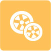
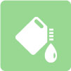
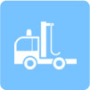
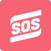

道路救援
4008-817-518转5
故障救援
电路故障、机械故障无法继续行驶、钥匙丢失无法开启车门.

更换轮胎
客户因轮胎损坏无法行驶，救援车可提供到现场更换备胎.
（故障车辆需自备气胎）

送油三升
客户驾车途中因缺少燃油无法行驶，为客户提供加注燃油服务。
(每次限3升，超出部分燃油费用由客户现场支付）

专业拖车
车辆出现故障无法恢复安全行驶，半小时内不能排除故障的拖车服务，经与客户协商后，通过专业清障车将车辆拖车至客户指定地点。
（富邦免费为客户付的施救范围为100公里，超出部分由客户承担。）

困境救援
a.客户车辆由于陷入泥泞道路或水坑等困境的现场紧急救援服务。
b.特殊困境救援
（如滑入桥下、滑下山坡、掉入水中等）
提供特殊困境救援服务
（每次特殊困境救援费用超出2000元部分需客户额外付费）
由于实施特殊困境救援导致车辆受损，本公司不承担任何责任。